ABOUT共和テクニカルについて
About共和テクニカルについて
ご挨拶
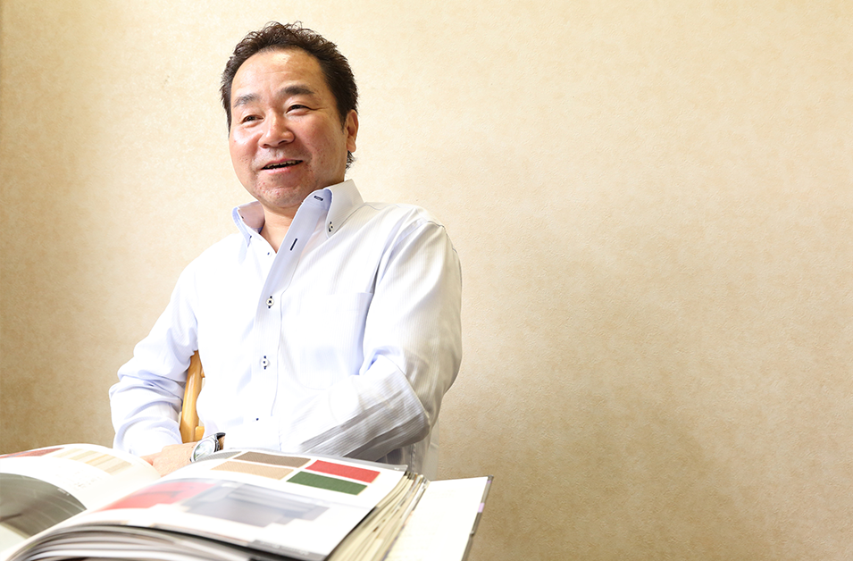
- 作る楽しさと
役に立てる実感がやりがいに - 代表 大坪 健治
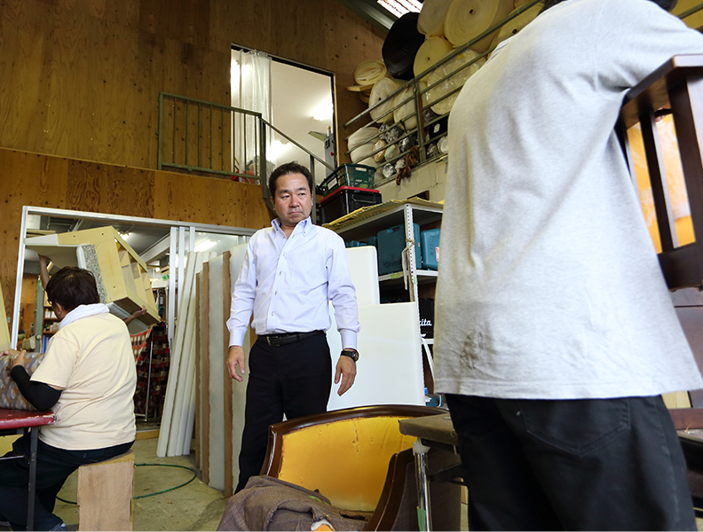
共和テクニカル株式会社は愛知県、名古屋市を中心に、椅子、ソファの製造、張リ替え・修理をレストラン、ホテル、病院などあらゆるお客様にお応えするべく努めて参りました。
木枠の製造、クッションの調整、記事の裁断や縫製…。
一人前になるには8年も9年もかかる職人の世界です。
一人ひとりが技術の向上だけではなく、お客様と向き合い、お客様の立場に立つところからわたしたちの「ものづくり」は始まります。
決してワンパターンではない、自身で工夫してカタチにするものづくりの楽しさを感じながら、私たちはお客様のニーズについて考え、豊富な知識と経験を活かしお応えしてまいります。
お客様が大切な家具について考える時に、私たちが一番身近な存在でありたいと考えています。
わたしたちの強み
共和テクニカル株式会社が誇りにしている、
わたしたちならではの強みをご紹介いたします。
-
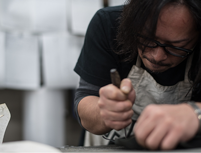
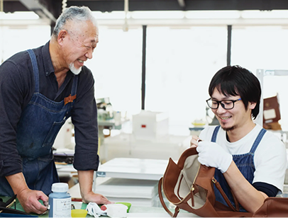
- 01高い技術と提案力
- 共和テクニカルには1級椅子張り技能士4人、2級椅子張り技能士7人が在籍しております。
ものづくりが大好きな人間が集まってくる共和テクニカルでは、スタッフから、「プライベートで子どもの椅子を作りたい」などの要望に対し、ミシンなど自由に使えるように勤務時間外も工場を開放しています。
作るだけでなく、お客様と職人が直接向き合うからこそできる提案力も他にはない私たちならではの強みです。
実際に使う方はもちろん、日々管理される側の方の立場に立ってより使いやすい提案を行っております。
-
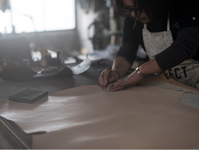
- 02全行程を自社で行っています
- 木枠の製造、クッションの調整、記事の裁断から縫製に至るまで、全工程を自社の職人のハンドメイドで行っております。
そのために、共和テクニカルでは工程ごとに作業を行えるよう、３つの工場を設けています。
１つひとつの仕事に対し、それぞれがプロフェッショナルとしてのプライドを持って向き合い高いクオリティの製品をご提供してまいります。
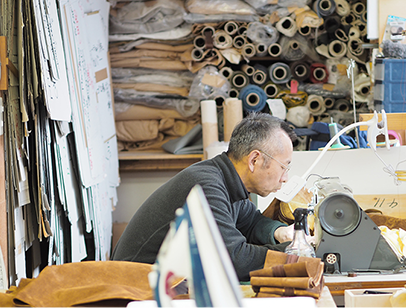
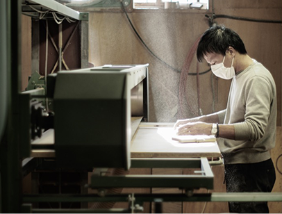
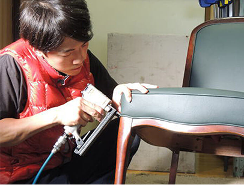
共和テクニカルの工場紹介
-
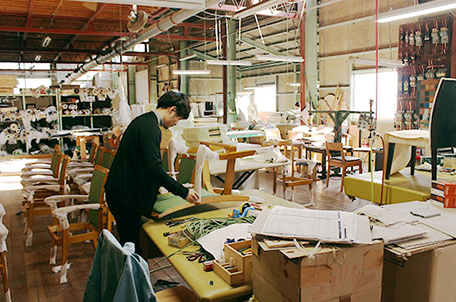
- 工場名
- 住所：
電話番号：
FAX：
概要説明文が入ります。工場で行っている工程などの説明が入ります。概要説明文が入ります。工場で行っている工程などの説明が入ります。概要説明文が入ります。工場で行っている工程などの説明が入ります。概要説明文が入ります。工場で行っている工程などの説明が入ります。
-
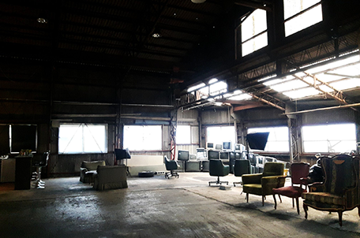
- 工場名
- 住所：
電話番号：
FAX：
概要説明文が入ります。工場で行っている工程などの説明が入ります。概要説明文が入ります。工場で行っている工程などの説明が入ります。概要説明文が入ります。工場で行っている工程などの説明が入ります。概要説明文が入ります。工場で行っている工程などの説明が入ります。
サービス
共和テクニカル株式会社では、椅子・ソファのオーダーメイド製作、張り替え、修理を行っております。
-
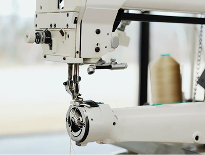
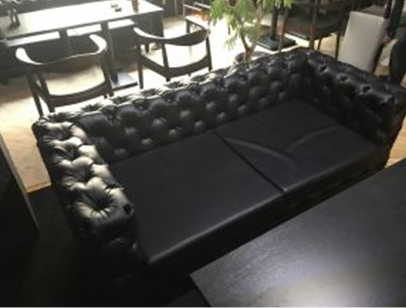
- 01オーダーメイド製作
-
ホームユースのダイニングセットから介護医療施設・飲食・寺院などの法人向けの商品をお客様のご要望を取り入れ、オーダーメイドで作成しております。
デザイナーと提携し、それぞれのシチュエーションに合わせたデザインに加え、弊社ならではの経験と技術を活かした高い利便性のご提案をいたします。
-
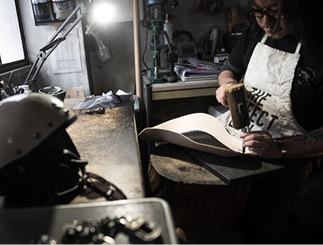
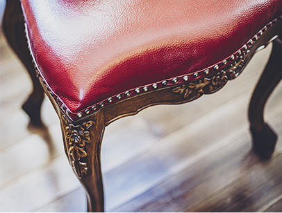
- 02張り替え・修理
-
大切な想い出の詰まった椅子やソファをいつまでも大切にお使いいただきたい。
私たちはお買い上げ頂いたときに近い状態にまで復元をし、且つ理想の座り心地を目指してまいります。
ソファは張地の傷などによる修理の場合は、張り替えだけで済む場合もありますが、張地のたるみや、クッションのヘタリがある場合は、クッション材の交換だけでなく、下地やフレームまで損傷が激しい場合がほどんどです。共和テクニカルでは、内部まで調査した上で、最適な修復方法をご提案いたします。
- 張り替え・修理の
製作事例の一部をご紹介いたします。 - 詳しくはこちら